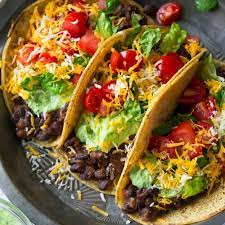

Cook up some black beans with garlic, cumin, and chili powder, and serve in warm corn tortillas with your favorite taco toppings, such as shredded lettuce, diced tomatoes, and avocado. This easy and delicious v egetarian meal is perfect for Taco Tuesday!
